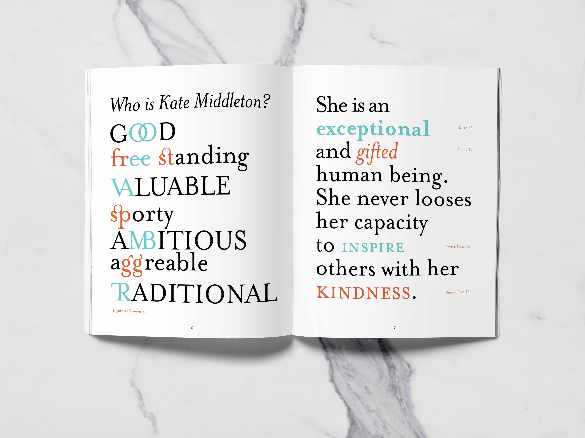
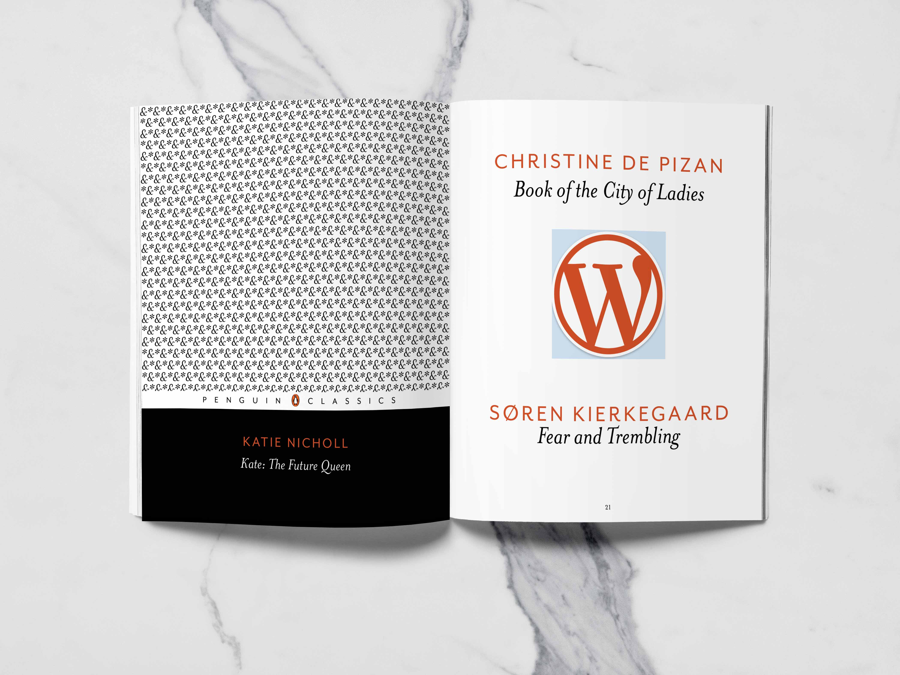

Concept & Design Philosophy
The theme of the type specimen is inspired by things on display. Throughout the pages, the glyphs of Mrs. Eaves are participating in a beauty contest to show off their finest features to distinguished judge Kate Middleton. Both Kate Middleton and beauty contests are often thought of as figures on display, which fit the purpose of the typeface.
Since Mrs. Eaves is a display typeface, Kate Middleton seemed to be a good comparison. As the future Queen of England, it is her duty to always put her best foot forward despite any circumstance. Although the future of the country is not riding on her decisions, the entirety of the United Kingdom is looking at how she makes her decisions. To continue on the idea of display, the characters of Mrs. Eaves are being showcased in a beauty contest.

Typography Analysis
Our judge, Kate Middleton, explains the judging criteria and gives a background on why the contest is being hosted. She is looking for good examples of a transitional typeface as well as teardrop terminals and low x-height. She also shows how Baskerville, the predecessor of Mrs. Eaves, uses the same qualities.

Character Showcase
Finally, all the characters are on display. The ones in blue receive honorable mention and a short blurb about their outstanding characteristics, whereas the ones in orange have a whole page dedicated to their exquisite features.


Ligatures & Typeface Family
Mrs. Eaves was not just a one and done typeface. It contains an extensive ligature library, as well as being a complete typeface with bold, italic, small caps, and demi caps.
The comparison shows how Mrs. Eaves inspired the typeface Mr. Eaves, demonstrating the evolution and expansion of this typographic family.

Usage
The uses for Mrs. Eaves are extensive, appearing on the cover of all Penguin Classics books and the Wordpress logo, looking elegant with a diverse range of uses.